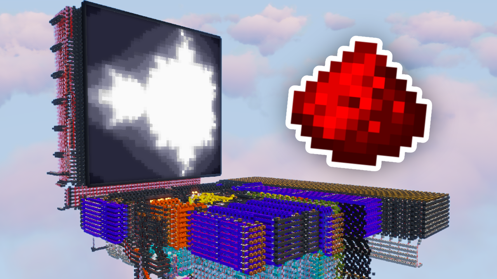
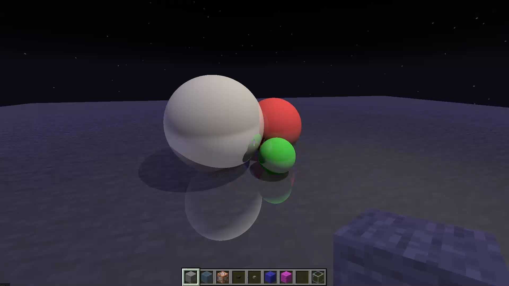

SB CPU 3
I spent almost 2 years planning, designing, and debugging this powerful pipelined Minecraft CPU built with just redstone.
GitHub
I spent almost 2 years planning, designing, and debugging this powerful pipelined Minecraft CPU built with just redstone.
GitHubA collection of my Pygame experiments, deriving and implementing a 3D software rasterization algorithm. Includes Bresenham's line algorithm tests and ray casting experiements.
GitHub
Upon discovering Minecraft's vanilla resource pack shaders, I decided to try and implement a basic ray tracing algorithm, made from scratch, to be rendered on top of the world.
GitHub